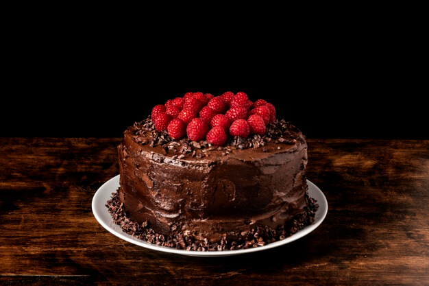

Ingredientes - Massa
1 xícara de chá de leite
1 xícara de chá de óleo de soja
2 unidades de ovo
2 xícaras de chá de farinha de trigo
1 xícara de chá de achocolatado em pó
1 xícara de chá de açúcar
1 colheres de sopa de fermento químico em pó
Ingredientes - Cobertura
2 colheres de sopa de manteiga
3 colheres de sopa de achocolatado em pó
3 colheres de sopa de açúcar
5 colheres de sopa de leite
Modo de Preparo - Massa
Coloque os líquidos no liquidificador e bata até misturar bem.
Coloque os outros ingredientes, sendo o fermento o último.
Leve para assar em forno médio, numa forma untada e enfarinhada.
Modo de Preparo - Cobertura
Para a cobertura, misture numa panela a manteiga, o achocolatado, o açúcar e o leite.
Leve ao fogo até derreter e a calda ficar homogênea.
Cubra o bolo ainda quente, furadinho com garfo.